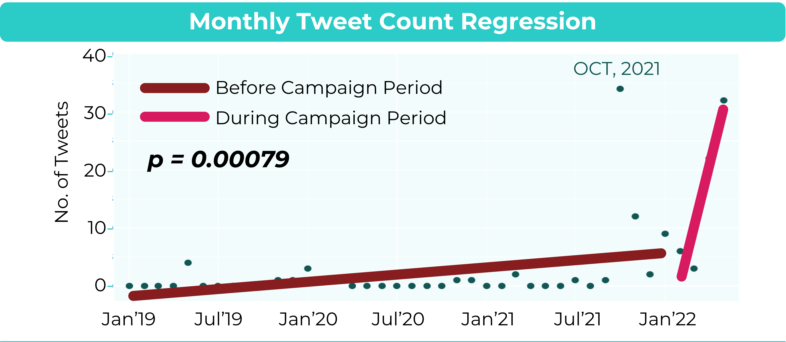
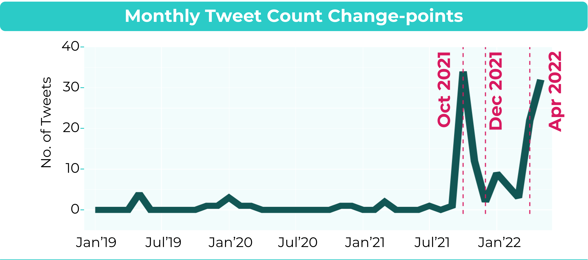
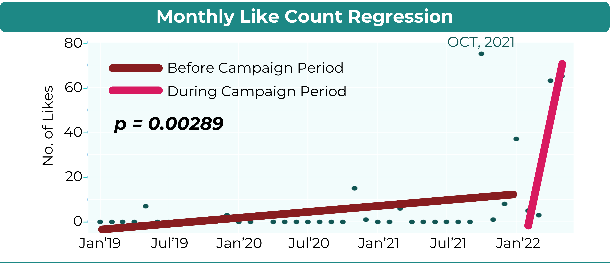
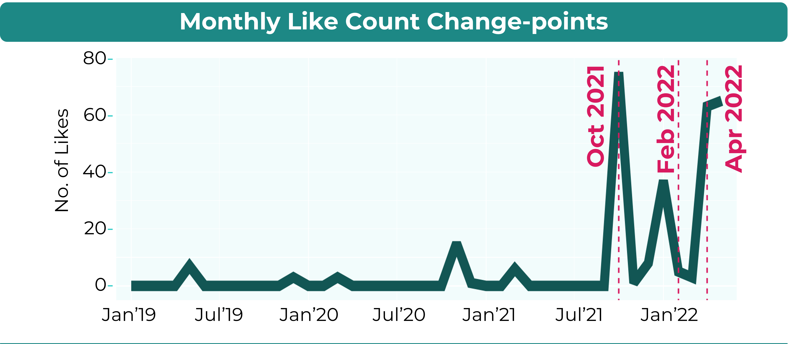
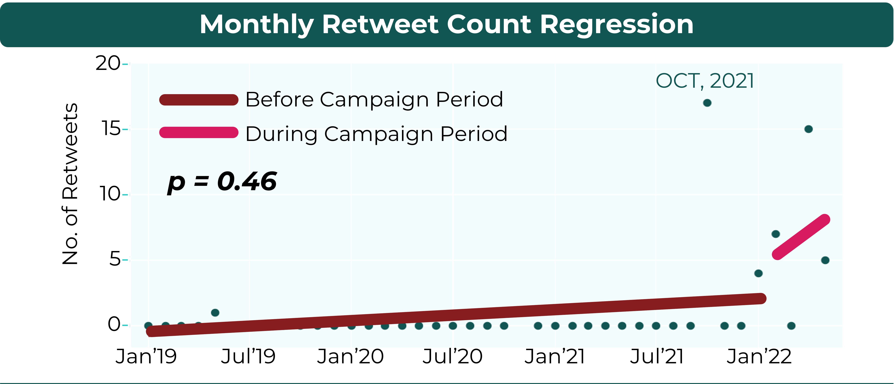

RESULTS
Monthly Tweet Count
The regression lines of the monthly tweet count in the months before the start of the 2022 national elections campaign period (January, 2019 to January, 2022) and during the campaign period (February, 2022 to May, 2022) show an increase in the number of tweets. Fisher z test (α=0.05) on slopes of the lines resulted to a p-value=0.00079 (z=-3.16), indicating a significant increase in the number of tweets during the campaign period.

Applying Pelt algorithm on the monthly tweet count data, change-points were detected in October, 2021, December, 2021, and April, 2022.

Monthly Like Count
The trend of monthly count of likes on tweets similarly increased. Fisher z test (α=0.05) on slopes of like count before and during the campaign period indicated a significant increase in the number of likes during the campaign period (z=-2.77, p=0.00289).

Similarly, the Pelt algorithm detected change-points in October, 2021, February, 2022, and April, 2022.

Monthly Retweet Count
On the other hand, there was no significant change in the number of retweets before and during the campaign period (Fisher z test α=0.05, z=-0.25, p=0.46).

End of Page